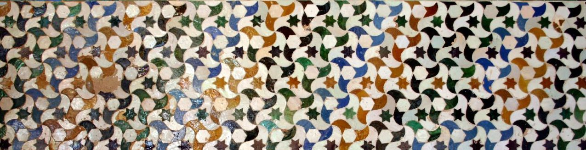
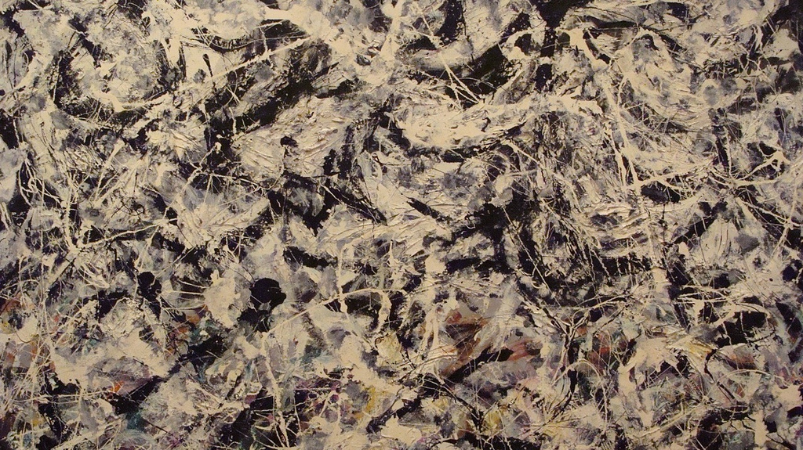

I was sent a very interesting article on the interplay between math and art. The basic premise of the article is
Does art sometimes spur mathematical discovery? There’s no simple answer to this question, but in some instances it seems very likely.
One example is the Tiles at the Alhambra (shown above), where we have the statements from the article,
But what’s fascinating about such Islamic tilings is that the work of anonymous artists and craftsmen also displays a near-perfect mastery of mathematical logic. Mathematicians have identified 17 types of symmetry: bilateral symmetry, rotational symmetry and so forth. At least 16 appear in the tilework of the Alhambra, almost as if they were textbook diagrams.
The patterns are not merely beautiful, but mathematically rigorous as well. They explore the fundamental characteristics of symmetry in a surprisingly complete way. Mathematicians, however, did not come up with their analysis of the principles of symmetry until several centuries after the tiles of the Alhambra had been set in place.
The implication here is that if the art work itself "displays a near-perfect mastery of mathematical logic" then the artist must, in some way, understand the mathematics and know that is what they are doing.
I'm reminded of another math-art connection with the Pyramid of Giza. If you take, for example, the base length (230.4 m) divided by the height (146.5 m) you get \(\pi/2\) out to 3 decimal places. The Egyptians show no evidence of understanding \(\pi\) in other contexts, so is this evidence of advanced math on the part of the Egyptians? Probably not. All you need to do is have a process which gives you this "coincidence". In the case of Egyptians, all you need to do is measure heights with a standard that you use to make the size of a wheel, and then use that wheel as a standard to roll out long linear distances as is needed to measure the base of a pyramid. The consequence of geometry guarantees that \(\pi\) will come in.
The "near-perfect mastery of mathematical logic" in the Tiles at the Alhambra can be made with some simple tessellation techniques without any deep understanding of the mathematics.
The other example the article raises is a Pollock painting:

To those who first encountered them, the paintings of Pollock seemed chaotic and senseless. With time, however, we’ve come to see that they have elements of order, though not a traditional sort. Their shapes are simultaneously predictable and unpredictable, in a fashion similar to the pattern of dripping water from a faucet. There’s no way to predict the exact effect of the next drip. But, if we chart the pattern of drips, we find that they fall within a zone that has a clear shape and boundaries.
Such unpredictability was once out of bounds for mathematicians. But, in recent years, it has become one of the hottest areas of mathematical exploration. For example, chaos theory explores patterns that are not predictable but fall within a definable range of possibilities, while fractal analysis studies shapes that are similar but not identical.
Intriguingly, mathematicians have not been able to accurately describe what Pollock was doing in his paintings. For example, there have been attempts to use fractal analysis to create a numerical “signature” of his style, but so far the method has not worked – we can’t mathematically distinguish Pollock’s autograph work from bad imitations.
Again, the implication here is that the artist is somehow ahead of his time, and doing things beyond the understanding of the mathematicians. However, if Pollock is using some complex physical process to produce the painting (e.g. randomly spraying paint all over) then it is not surprising that simple mathematical models won't capture the details. This, to me, doesn't suggest a connection between art and math but rather suggests that the writer is stretching to make a connection between the two.
In all of these comparisons between art and mathematics I am struck with a feeling that the writer is somehow trying to add a layer of legitimacy to the art by connecting it to mathematics or to science. I don't think this does a service to either the art or the mathematics.